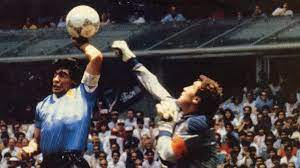
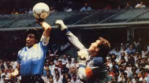

Futbol
El futbol es un deporte que uno pensara que es solo patear un balon con los pies
pero uno esta incorecto el futbol tiene muchas cualidades como controlar el balon,
conducir el balon, pasar el balon y tirar a la porteria.
Equipos de futbol
Madrid, Barca, Liverpool, Manchestercity, Manchester united, Bucaramanga y el Paris Saint Germane etc.

fútbol sala
Variante del fútbol que se practica entre dos equipos de cinco jugadores en un campo de 24 m a 28 m de largo por 13 m o 15 m de ancho y con un balón más duro y más pequeño; el encuentro dura 40 minutos, divididos en dos partes iguales
fútbol 7
Variante del fútbol que se practica entre dos equipos de siete jugadores en un campo más pequeño que el de fútbol, pero más grande que el de fútbol sala.

Tennis Dobles
Es como el Tennis normal, solo que en vez de ocupar 1 jugador en cada quipo son 4 en total. Esto significa 2 personas por equipo.
El futbol es un deporte que uno pensara que es solo patear un balon con los pies pero uno esta incorecto el futbol tiene muchas cualidades como controlar el balon, conducir el balon, pasar el balon y tirar a la porteria.
Equipos de futbol
Madrid, Barca, Liverpool, Manchestercity, Manchester united, Bucaramanga y el Paris Saint Germane etc.
fútbol sala
Variante del fútbol que se practica entre dos equipos de cinco jugadores en un campo de 24 m a 28 m de largo por 13 m o 15 m de ancho y con un balón más duro y más pequeño; el encuentro dura 40 minutos, divididos en dos partes iguales
fútbol 7
Variante del fútbol que se practica entre dos equipos de siete jugadores en un campo más pequeño que el de fútbol, pero más grande que el de fútbol sala.
Tennis Dobles
Es como el Tennis normal, solo que en vez de ocupar 1 jugador en cada quipo son 4 en total. Esto significa 2 personas por equipo.